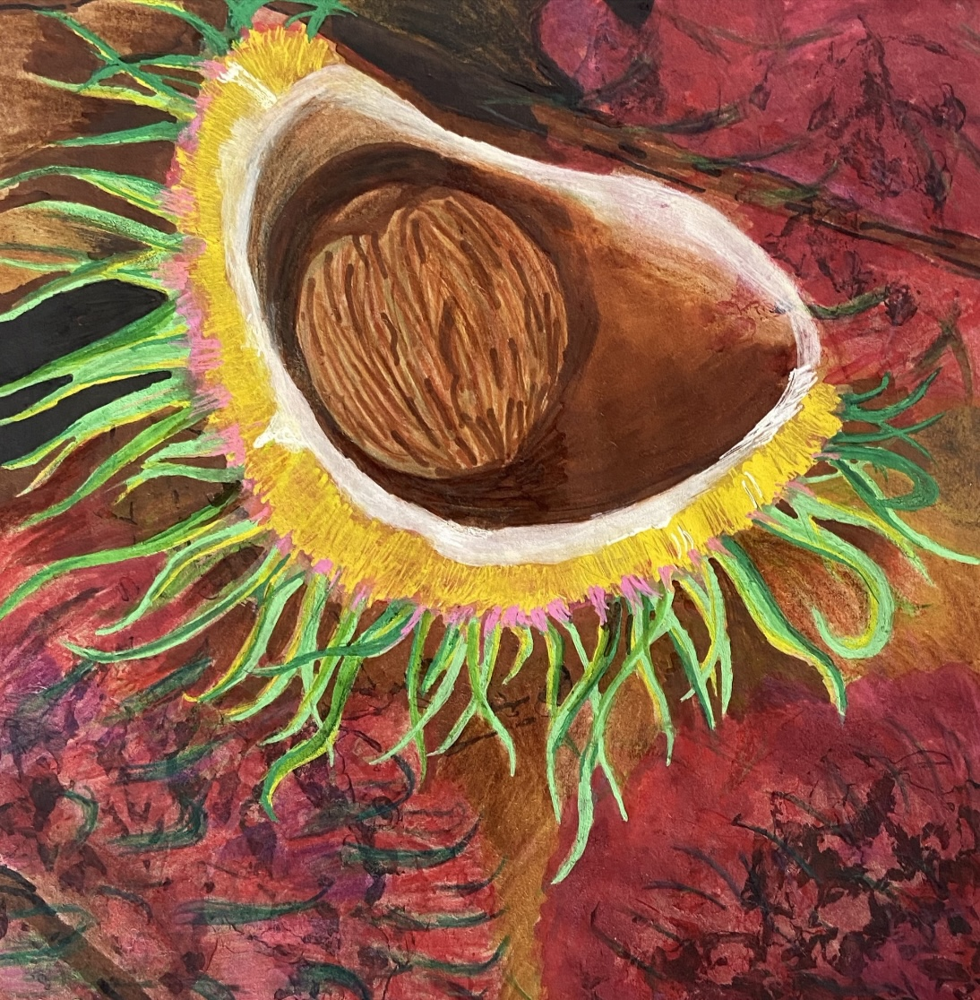
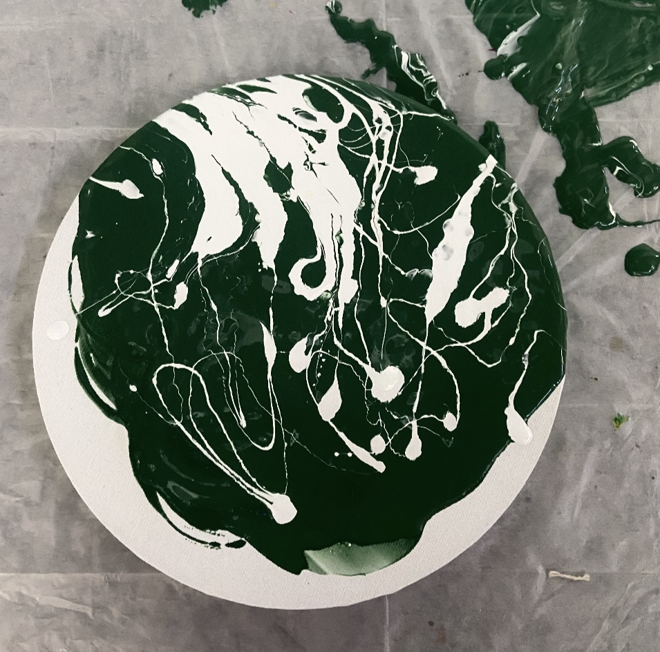

This is Page 1 about drawings
I am very good at using different painting materials, such as:crylic paint, oil paint and wax crayon. I often use it with other media, for example I mix paint with quartz sand to create a more three-dimensional effect. I enjoy this process and I believe I will always choose to record the beauty in my eyes in this way.

